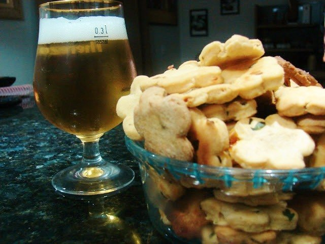

Doces · Biscoitos
Biscoitinhos de cerveja

Ingredientes
- 2 ¾ xícaras de farinha de trigo
- 1 xícara de manteiga sem sal em temperatura ambiente
- 2 colheres (sopa) de cerveja
- 1 xícara de açúcar cristal
Modo de preparo
- Preaqueça o forno em temperatura média (180 °C). Numa tigela, junte a farinha de trigo e a manteiga. Amasse com as mãos até integrar bem os ingredientes.
- Junte a cerveja e continue amassando até a massa ligar e puder ser enrolada com as mãos.
- Faça bolinhas pequenas (1,5 cm de diâmetro) e passe no açúcar cristal.
- Coloque os biscoitinhos numa assadeira sem untar e leve ao forno preaquecido por 30 minutos. Retire do forno, deixe esfriar e congele.
Observação
Você pode transformar os biscoitinhos em bolachinhas apenas variando o formato: faça as bolinhas e depois achate-as. Congelamento: coloque os biscoitinhos num saco plástico, retire o ar e vede bem; etiquete e congele. Descongelamento: em temperatura ambiente.